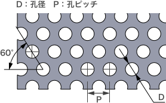
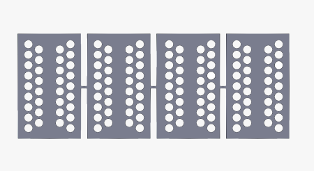
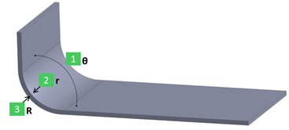
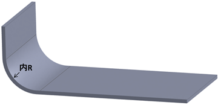
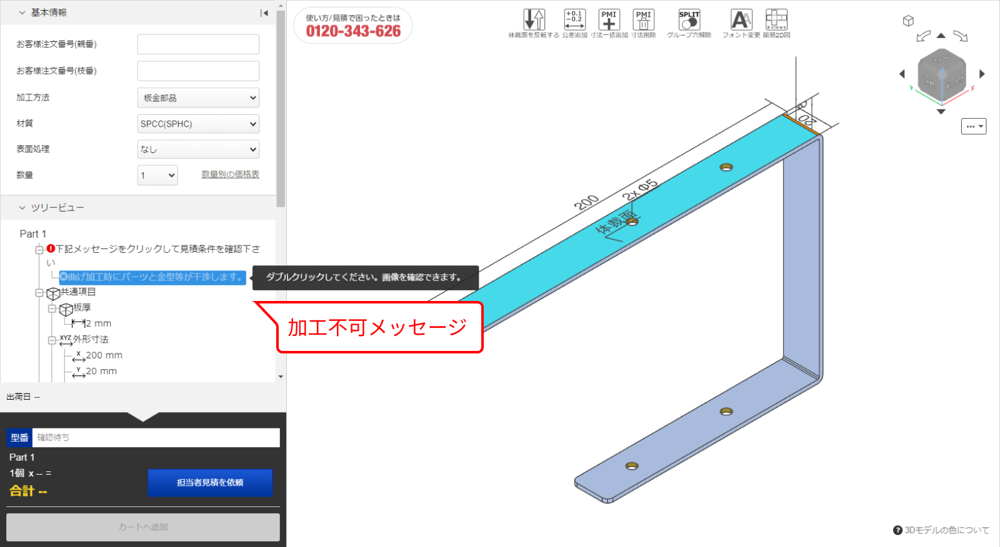
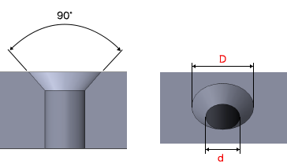
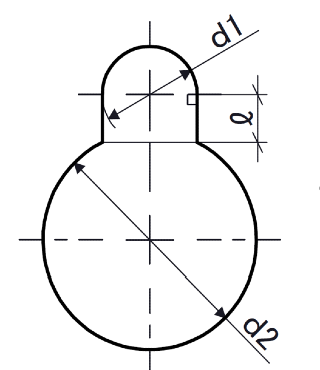
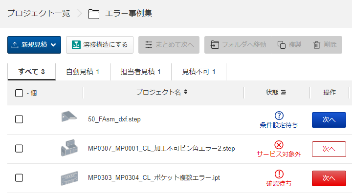

SHM ／ Sheet Metal
板金
3Dデータをアップロードするだけで、板金部品の即時見積もり・製作が可能です。平板・曲げ・各種穴加工・タップ・ナット/ソケット取付・表面処理・洗浄・刻印まで対応し、最短1日目出荷の短納期から30%OFFの長納期まで選べます。本ページでは設計者が確認すべき対応材質・板厚・公差・形状ルール・付帯サービス・納期をまとめます。
1. 概要・対応形状
meviyの板金部品サービスは、定尺材から切り出し・抜き・曲げ加工で部品を製作します。平板部品から各種曲げ形状まで自動見積もりに対応します。


見積もり可能な形状
2. 対応材質・板厚・外形寸法
材質区分ごとに、表面処理・板厚（mm）・外形寸法範囲（縦・横・高さ、mm）を示します。板厚公差はシム用・透明樹脂を除き±10%が目安です。
鉄系
| 材質 | 表面処理 | 板厚（mm） | 外形寸法（板厚2.0以下／超） |
|---|---|---|---|
| SPCC / SPHC SS400(板厚9のみ) | 素地 | 0.8 1.0 1.2 1.6 2.0 2.3 3.2 4.5 6.0 9.0 | 5～1700／10～1700 |
| SPCC / SPHC | 粉体塗装／溶剤塗装 | 0.8 1.0 1.2 1.6 2.0 2.3 3.2 4.5 6.0 | 5～1700／10～1700 ※板厚0.8/1.0/6.0は上限1200 |
| SPCC / SPHC | 無電解ニッケルメッキ／四三酸化鉄皮膜／三価クロメート(白) | 0.8 1.0 1.2 1.6 2.0 2.3 3.2 4.5 6.0 9.0 | 5～1200／10～1200 |
| SPCC / SPHC | 三価クロメート(黒) | 0.8 1.0 1.2 1.6 2.0 2.3 3.2 4.5 6.0 | 5～300／10～300 |
| SS400 | 素地 | 10.0 12.0 16.0 | 20～1700（板厚2.0超のみ） |
| SECC（電気亜鉛メッキ鋼板） | 電気亜鉛メッキ | 0.8 1.0 1.2 1.6 2.0 2.3 3.2 | 5～1700／10～1700 |
| SPCC（溶融亜鉛メッキ鋼板） | 溶融亜鉛メッキ | 1.6 2.3 | 5～1200／10～1200 |
| SPCC（シム用） | 素地 | 0.1 0.2 0.3 0.5 | 横5～850・縦5～300（平板のみ） |
ステンレス系
| 材質 | 仕上げ方法 | 板厚（mm） | 外形寸法（板厚2.0以下／超） |
|---|---|---|---|
| SUS304 | No.1 | 9.0 / 10.0 / 12.0 | 9.0は10～1700／10.0・12.0は20～1700 |
| SUS304 | 2B | 0.8 1.0 1.2 1.5 2.0 2.5 3.0 4.0 5.0 6.0 | 5～1700／10～1700 |
| SUS304 | 2B（片面保護シート付） | 0.8 1.0 1.2 1.5 2.0 2.5 3.0 | 上限1200まで |
| SUS304 | 片面#400研磨（片面保護シート付） | 0.8 1.0 1.2 1.5 2.0 3.0 | 5～1700／10～1700 |
| SUS304 | 片面ヘアライン（片面保護シート付） | 0.8 1.0 1.2 1.5 2.0 3.0 | 5～1700／10～1700 |
| SUS316 | 2B | 0.8 1.0 1.2 1.5 2.0 3.0 4.0 5.0 6.0 | 5～1700／10～1700 |
| SUS430 | 2B | 0.8 1.0 1.2 1.5 2.0 3.0 | 5～1700／10～1700 |
| SUS304(H)（シム用） | 素地 | 0.05 0.1 0.2 0.3 0.5 0.8 1.0 | 横5～850・縦5～300（平板のみ） |
※長納期選択時、SUS304(2B)板厚0.8～3.0mmはSUS304(2B)相当材を使用する場合があります。
アルミニウム
| 材質 | 表面処理 | 板厚（mm） | 外形寸法（板厚2.0以下／超） |
|---|---|---|---|
| A5052 | 素地 | 0.8 1.0 1.2 1.5 1.6 2.0 2.5 3.0 4.0 5.0 6.0 | 5～1700／10～1700 |
| A5052 | アルマイト(白)／(黒) | 同上 | 5～1200／10～1200 |
| A5052 | アルマイト(つや消し黒) | 同上 | 5～1100／10～1100 |
| A5052 | アロジン処理相当(三価クロム化成処理) | 同上 | 5～1000／10～1000 |
| A5052(アルマイト鋼板白) | アルマイト(白) | 1.0 1.5 2.0 3.0 | 5～1700／10～1700 |
| A5052(アルマイト鋼板黒) | アルマイト(黒) | 1.0 1.5 2.0 3.0 | 5～1700／10～1700 |
A5052＝最も一般的なアルミ合金。切削性・耐食性・入手性に優れます。
銅・真鍮
| 材質 | 板厚（mm） | 外形寸法 横(長手)／縦(短手) |
|---|---|---|
| C1020（無酸素銅） | 1.0 1.5 2.0 | 横5～1200／縦5～360 |
| C1020（無酸素銅） | 3.0 | 横10～1500／縦10～1000 |
| C1100（タフピッチ銅） C2801P（真鍮・黄銅） | 1.0 2.0 | 横5～1500／縦5～1000 |
| C1100 / C2801P | 3.0 | 横10～1500／縦10～1000 |
| C2680P / C2801P（シム用） | 0.05 ／ 0.1 0.2 0.3 0.5 1.0 | 横5～850(0.05)・横5～300／縦5～280 |
C1020＝高純度純銅で水素脆性なし。C1100＝安価な純銅（水素脆性あり）。C2801P＝真鍮（銅＋亜鉛）で機械的強度が高い。シム用は板厚0.05～0.1mmがC2680P、0.2～1.0mmがC2801P。
パンチングメタル（SUS304-BA・丸孔60°千鳥タイプ）
| 孔径×孔ピッチ | 開口率 | 板厚（mm） | 外形寸法（縦・横・高さ） |
|---|---|---|---|
| ø1 × 2p | 22.6% | 0.8 | 30～900 |
| ø2 × 3p | 40.3% | 1.0 | 30～900 |
| ø3 × 5p | 32.7% | 1.0 1.5 | 30～900 |
| ø5 × 8p | 35.4% | 1.0 1.5 | 30～900 |
| ø8 × 12p | 40.2% | 1.5 | 30～900 |
3. 薄板・シムプレート／透明樹脂／複合板
薄板・シムプレート（標準納期：2日目出荷）
対象形状＝切り欠き・通し穴・自由形状穴（角穴・長穴含む）。非対象＝曲げ・成形穴（平板のみ）。板厚・材質ごとに板厚公差が異なります。
| 材質 | 板厚（mm） | 板厚公差 |
|---|---|---|
| SPCC(シム用) | 0.1 / 0.2 / 0.3 / 0.5 | ±0.03 / ±0.03 / ±0.04 / ±0.06 |
| SUS304(H)(シム用) | 0.05 / 0.1 / 0.2 / 0.3 / 0.5 / 0.8 / 1.0 | ±0.005 / ±0.02 / ±0.03 / ±0.035 / ±0.04 / ±0.04 / ±0.05 |
| C2680P/C2801P(シム用) | 0.05 / 0.1 / 0.2 / 0.3 / 0.5 / 1.0 | ±0.005 / ±0.02 / ±0.03 / ±0.04 / ±0.05 / ±0.08 |
板厚0.8/1.0mmは他ステンレス材も選べますが、SUS304(H)(シム用)が高精度です。
透明樹脂（標準納期：3日目出荷／平板のみ）
対象穴種＝通し穴・タップ穴・皿穴・インサート・長穴・角穴・自由形状穴。非対象＝曲げ。グレードはスタンダード／制電、色は透明／ブラウンスモーク。
| 材質 | 板厚（mm） | 全光線透過率（透明／ブラウンスモーク） | 使用雰囲気温度 |
|---|---|---|---|
| PET | 3.0 5.0 8.0（スモーク3.0 5.0） | 87% / 28%（制電 77% / 30%） | −15～55℃ |
| アクリル | 3.0 5.0 8.0 10.0（スモーク3.0 5.0） | 93% / 28%（制電 87% / 25%） | −40～65℃ |
| ポリカーボネート | 3.0 5.0 | 89% / 35%（制電 86% / 32%） | −40～120℃ |
| 塩ビ（ポリ塩化ビニル） | 3.0 5.0 | 83% / 27%（制電 77% / 30%） | −10～60℃ |
透明樹脂の板厚公差：3.0→±0.2、5.0→±0.3、8.0→±0.6、10.0→±0.7。外形寸法は横10～2000・縦10～1000。
複合板（アルミ複合板・標準納期：3日目出荷／平板のみ）
芯材＝発泡ポリエチレン樹脂、表面＝焼付塗装、色＝シルバー／つや消しシルバー／黒。板厚3.0mm、外形寸法 横10～2000・縦10～1000。対象穴種＝通し穴・皿穴・長穴・角穴・自由形状穴。非対象＝曲げ。表面材の金属が鋭利になる恐れがあります。
4. 表面処理
各表面処理の特性（〇：良 △：中 ×：低／無）です。膜厚指定はできません。納期種別によりメッキ品の外観に若干の色味差異が生じる場合がありますが、性能は同等です。
| 表面処理 | 耐食性 | 耐摩耗性 | 硬度 | 見た目/装飾性 | 導電性 |
|---|---|---|---|---|---|
| 無電解ニッケルメッキ | 〇 | 〇 | 〇 | △ | 〇 |
| 四三酸化鉄皮膜 | △ | × | × | 〇 | 〇 |
| 三価クロメート(白) | △ | × | × | 〇 | 〇 |
| 三価クロメート(黒) | △ | × | × | 〇 | 〇 |
| アルマイト(白) | 〇 | △ | △ | 〇 | × |
| アルマイト(黒) | 〇 | △ | △ | 〇 | × |
| アルマイト(つや消し黒) | 〇 | △ | △ | 〇 | × |
| アロジン処理相当(三価クロム化成処理) | △ | × | × | △ | 〇 |
塗装は溶剤塗装・粉体塗装に対応。日本メーカー塗料を使用し、レッド・イエロー・ブラック・ホワイト・グレー系・グリーン系など多数の色（近似マンセル値）から選択できます。詳細色は見積画面で選択します。
メッキ・塗装時の外形上限寸法（別表）
| 表面処理 | 縦 | 横 | 高さ |
|---|---|---|---|
| 無電解ニッケルメッキ／四三酸化鉄皮膜／三価クロメート(白) | 1200 | 800 | 300 |
| アルマイト(白)(黒) | 600 | 400 | 300 |
| アルマイト(つや消し黒) | 1100 | 400 | 300 |
| アロジン処理相当 | 900 | 650 | 250 |
メッキ鋼板（SECC等）は切断面（板厚面）にメッキがのりません。
5. 熱処理
6. 曲げ加工・R曲げ

モデリングの基本ルール（曲げ）
- 板厚
- 一定としてモデリングしてください。
- 通常曲げの内R
- 0以上かつ板厚以下。曲げ外Rは「内R＋板厚」。
- R曲げの内R
- 10以上（対応範囲は板厚により異なる）。曲げ外Rは「内R＋板厚」。
曲げ部の板厚が不均一なモデルは自動見積もり不可ですが、自動修正機能で見積可能になる場合があります。
R曲げ形状の対象範囲（FR曲げ加工が可能な内R範囲）
R曲げは基本的にFR曲げ（送り曲げ）で製作し、曲げ部には連続した金型痕がつきます。FR曲げが困難な場合は通常曲げ（V曲げ）やR曲げ専用金型での内Rを提案します。

| 板厚（mm） | 最小内R | 最大内R |
|---|---|---|
| 0.8 / 1.0 / 1.2 / 1.5 / 1.6 / 2.5 | 10 | 150 |
| 2.0 | 10 ※鉄材は15 | 150 |
| 2.3 | 15 | 150 |
| 3.0 / 3.2 | 30 | 150 |
FR曲げが加工できない場合のRサイズ変換テーブル
| 変換前の内R | 変換後の内R（参考値） | 使用される曲げ加工 |
|---|---|---|
| 板厚の2倍以内 / R3未満 | 板厚（参考値） | 通常曲げ（V曲げ） |
| R3 ≦ 内R ＜ R6 | R3 | 専用金型のR曲げ |
| R6 ≦ 内R ＜ R10 | R6 | 専用金型のR曲げ |
| R10 ≦ 内R ＜ R12.5 | R10 | 専用金型のR曲げ |
| R12.5 ≦ 内R ＜ R15 | R12.5 | 専用金型のR曲げ |
| R15 ≦ 内R ＜ R17.5 | R15 | 専用金型のR曲げ |
| R17.5 ≦ 内R ＜ R20 | R17.5 | 専用金型のR曲げ |
| R20 ≦ 内R ＜ R22.5 | R20 | 専用金型のR曲げ |
| R22.5 ≦ 内R ＜ R25 | R22.5 | 専用金型のR曲げ |
| R25 ≦ 内R ＜ R30 | R25 | 専用金型のR曲げ |
| R30 ≦ 内R | 対象外（担当者見積もりをご依頼ください） | |
曲げ加工の条件・干渉
meviy内部で曲げ加工時の金型干渉解析を行い、干渉が見つかった場合は加工不可と判定されます。コの字曲げ・段曲げ(Z曲げ)は次を目安に設計してください。

- コの字曲げ
- 外寸A・C（A≦C）のとき内寸BはA以上。外寸A・Cは最小曲げ高さ以上。
- 段曲げ(Z曲げ)
- 段曲げ高さ＝A寸法＋板厚tの2倍。A寸法は最小曲げ高さ以上。
- 突き当て部
- 曲げ線に平行な突き当て部がないと曲げ位置がずれる恐れ。平行な突き当て部をモデリングしてください。
- 角度公差
- 板厚10mm以下：±1.0°、板厚10mm超：±1.5°。
曲げ加工時、曲げ部の両側に板厚の約15%の膨らみ（コブ）が生じます。
7. 穴・タップ・皿穴・だるま穴
穴加工の種類
タップ穴・バーリングタップ・ナット取付（圧入/溶接）のねじ山は並目。ソケット取付のねじ山はテーパ。ナット・ソケットはモデリング不要で穴情報指示欄から選択します。
穴認識の仕組み
3D CADデータはアップロード後に中間フォーマットへ変換され、その際タップ穴／皿穴などの穴種情報は失われます。meviyは穴径と形状特徴を検出し、穴情報DBに引き当てて穴種を推測します。検出穴径がタップ穴の呼び径表に引き当たらない場合は通し穴として扱われます（穴種・呼び径は見積設定中に変更可。ただし板厚毎の対応サイズにない呼び径は選択不可）。SOLIDWORKS利用時は元の穴情報を直接引き継ぐ設定が可能です。
タップ穴のサイズ選択（代表：鉄系 SPCC/SPHC/SS400/SECC）
パンチングメタル・複合板・板厚0.8mm以下ではタップ穴を選択できません。
| 板厚（mm） | 選択できるタップ穴径 |
|---|---|
| 1.0 / 1.2 | M2 M2.5 M3 |
| 1.6 | M2 M2.5 M3 M4 M5 |
| 2.0 / 2.3 | M2 M2.5 M3 M4 M5 M6 |
| 3.2 | M2(※) M2.5 M3 M4 M5 M6 M8 |
| 4.5 | M3 M4 M5 M6 M8 M10 |
| 6.0 | M4 M5 M6 M8 M10 |
| 9.0 | M5(※SS400素地のみ) M6 M8 M10 |
| 10.0 / 12.0 / 16.0 | M6 M8 M10 M12 M14 M16 |
ステンレス系・アルミ・銅・透明樹脂も板厚ごとに選択範囲が定義されています。例：SUS304(2B) 1.0mm→M2/M2.5/M3、3.0mm→M3～M8、12.0mm→M6～M16。透明樹脂は3.0mm→M3～M5、10.0mm→M3～M10。
バーリングタップ
円筒フランジ形状を検出するとバーリングタップとして識別されます。内径dは「タップ穴の認識」と同じルール、フランジ高さhと厚みtは板厚以下でモデリングします。パンチングメタル・シムプレート・透明樹脂・複合板では選択不可。
| 材質 | 板厚（mm） | バーリングタップ穴径 |
|---|---|---|
| SPCC/SPHC/SECC | 0.8 | M3 M4 |
| SPCC/SPHC/SECC | 1.0 / 1.2 / 1.6 | M2(※) M2.5(※) M3 M4 M5 |
| SUS各種 / A5052 | 0.8 | M3 M4 |
| SUS各種 / A5052 | 1.0 / 1.2 / 1.5 / 1.6 | M3 M4 M5 |
| 銅 C1020/C1100/C2801P | 1.0 / 1.5 | M3 M4 M5 |
※M2・M2.5はSPCC(溶融亜鉛メッキ)・SECCに限る。板厚1.6mmのSUS/A5052枠はA5052に限る。
皿穴のモデリングとサイズ
- 円錐角度
- 90°でモデリング。
- 穴径比 D/d
- d≦4.0mmのとき1.4超、d>4.0mmのとき1.7超。

皿穴は下穴径から呼び径を判定（例：M3＝3.2≦d≦4.0、M5＝5.3≦d≦6.5、M8＝8.4≦d≦10.0、M16＝17.0≦d≦18.5）。パンチングメタル・シムプレートでは選択不可。鉄系では板厚2.0mm→M3、4.5mm→M3～M6、10～16mm→M5～M16が選択できます。
だるま穴のモデリングルール
だるま穴形状を検出すると認識されます。条件式をすべて満たすようモデリングしてください：d1 ≧ 4.5、d2 ≧ 2×d1 + 2、ℓ > 0。

8. ナット・ソケット・ねじインサート
ナット取付
取付方法は圧入・溶接（スポット）・溶接（アーク）。同一モデル上で複数方法の混在は不可。溶接(アーク)は個数によらず担当者見積もり。SUS316・SUS304(2B)片面保護シート付・銅・パンチングメタル・シムプレート・透明樹脂・複合板はナット取付不可。
| 項目 | 圧入ナット | 溶接（スポット）ナット |
|---|---|---|
| 下穴径(d)上限 | M3:5.5 / M4:7.0 / M5:8.0 / M6:10.0 / M8:13.0 | M4:11.0 / M5:11.0 / M6:13.0 / M8:15.0 / M10:17.0 / M12:19.0 |
| 自動見積最大個数 | 12個 | 12個 |
サイズ選択は材質・板厚ごと。例：鉄系(SPCC/SPHC/SECC) 圧入は板厚0.8→M3/M4、1.0～1.6→M3～M6、2.0～3.2→M3～M8。スポット溶接は板厚1.6mm以上でM4～M12。
ソケット取付（板金では担当者見積もり）
取付はアーク溶接。SUS316・SUS304(2B)片面保護シート付・アルミ・銅・パンチングメタル・シムプレート・透明樹脂・複合板はソケット取付不可。自動見積最大個数は4個。対応材質はSPCC/SPHC/SECC・SUS304/430、板厚1.0～6.0mm、サイズ6A(Rc1/8)～50A(Rc2)。
| ソケットサイズ | 下穴径(d)上限 鉄材 | 下穴径(d)上限 ステンレス材 |
|---|---|---|
| 6A(Rc1/8) | 19.0 | 15.0 |
| 8A(Rc1/4) | 22.0 | 19.0 |
| 10A(Rc3/8) | 28.0 | 22.0 |
| 15A(Rc1/2) | 32.0 | 27.0 |
| 20A(Rc3/4) | 38.0 | 33.0 |
| 25A(Rc1) | 46.0 | 40.0 |
| 32A(Rc1 1/4) | 58.0 | 49.0 |
| 40A(Rc1 1/2) | 63.0 | 55.0 |
| 50A(Rc2) | 76.0 | 68.0 |
ねじインサート（透明樹脂のみ・材質SUS304）
穴情報指示を変更してねじインサートを指示できます（モデリング方法はタップ同様）。呼び長さ(D)は呼び径ごとに1D／1.5D／2Dの3種。自動見積可能な最大数量は50個。短/標準納期は＋2日（21～50個は＋3日）、長納期の納期加算はありません。対応板厚3.0～10.0mm、呼び径M3～M8（板厚により異なる）。
9. 加工限界・モデリング基本ルール
各規格部位には加工限界値・寸法範囲が定められています。規格範囲内のモデルを作成してください（表面処理・形状・加工条件により値が異なる場合があります）。代表値を示します（鉄系 SPCC/SPHC/SUS304等）。
穴と端面・穴間の最小距離（限界値c、mm）
| 板厚 | 0.8 | 1.0 | 1.2 | 1.6 | 2.0 | 2.3 | 3.2 | 6.0 | 9.0 | 12.0 | 16.0 |
|---|---|---|---|---|---|---|---|---|---|---|---|
| 限界値c | 0.5 | 0.5 | 0.6 | 0.8 | 1.0 | 1.1 | 1.5 | 3.0 | 4.0 | 6.0 | 8.0 |
通し穴の最小径＝おおむね板厚と同等以上（例：板厚1.0→1.0、板厚6.0→6.0）。タップ穴・皿穴は最外径からの距離で最小距離を計算します。
最小曲げ高さ（限界値h、mm／鉄系 SPCC/SPHC/SS400・通常曲げ）
| 板厚 | 0.8 | 1.0 | 1.2 | 1.6 | 2.0 | 2.3 | 3.2 | 6.0 | 9.0 | 16.0 |
|---|---|---|---|---|---|---|---|---|---|---|
| 限界値h | 4.2 | 4.3 | 5.5 | 6.8 | 8.2 | 9.4 | 13.3 | 23.5 | 33.5 | 88.5 |
R曲げ形状はより低い限界値（例：SPCC 板厚1.0→2.3、3.2→6.9）。段曲げ・鋭角曲げにも別途限界値・最小角度（一般にΘ≧45°、厚板はΘ≧88°等）があります。
切り欠きと曲げの最小距離（目安）
- 限界値h
- 0.8≦t≦2.0のとき5t、2.3≦t≦9.0のとき4t。
- 保証値b / 限界値b
- 0.8≦t≦2.0のとき保証2t・限界t、2.3≦t≦9.0のとき限界2t。
10. 公差・精度
普通許容差はJIS B 0408 金属プレス加工品普通許容差に準拠（板厚6.0mm以下：B級、板厚6.0mm超：C級。R曲げの「曲げ加工部」は板厚によらずC級）。
許容寸法公差（規格値）
| 規格部位 | 基準寸法の区分 | 通常曲げ 板厚6.0以下 | 通常曲げ 板厚6.0超 | R曲げ 板厚3.2以下 |
|---|---|---|---|---|
| 曲げ無し部 | 6以下 | ±0.1 | ±0.3 | ±0.1 |
| 6超～30 | ±0.2 | ±0.5 | ±0.2 | |
| 30超～120 | ±0.3 | ±0.8 | ±0.3 | |
| 120超～400 | ±0.5 | ±1.2 | ±0.5 | |
| 400超～1,000 | ±0.8 | ±2.0 | ±0.8 | |
| 1,000超～2,000 | ±1.2 | ±3.0 | ±1.2 | |
| 曲げ加工部 | 6以下 | ±0.3 | ±0.5 | ±0.5 |
| 6超～30 | ±0.5 | ±1.0 | ±1.0 | |
| 30超～120 | ±0.8 | ±1.5 | ±1.5 | |
| 120超～400 | ±1.2 | ±2.5 | ±2.5 | |
| 400超～1,000 | ±2.0 | ±4.0 | ±4.0 | |
| 1,000超～2,000 | ±3.0 | ±6.0 | ±6.0 |
許容寸法公差は同じ面の穴間や、曲げで隣接した端面・垂直面との寸法に限り適用。複数の曲げ加工部をまたぐ寸法には適用されません。塗装指定時は生地状態での規格値です。
指定可能な寸法公差（自動見積もり）
| 寸法種類 | 公差範囲 | 注意 |
|---|---|---|
| 通し穴径 | 両側公差 ±0.2mm以上 | タップ・バーリング・皿穴は対象外 |
| 通し穴と通し穴の距離 | 両側公差 ±0.2mm以上 | タップ・バーリング・皿穴は対象外 |
| 板端面と端面の距離 | 両側公差 ±0.2mm以上 | 曲げがある場合・外形寸法は対象外 |
寸法公差の対象材質・板厚：SPCC/SPHC（0.8～4.5）、SUS304(2B)（0.8～6.0）、SUS430(2B)（0.8～3.0）。板厚公差は±10%目安。
11. 付帯サービス（面取り・洗浄・刻印・品質）
面取り・バリ取り
両面バリ取り機でバリ・カエリを除去（糸面取り・C/R面取り）。抜き加工時の0.1mm超のバリ・カエリは除去します（糸面取り・C面取りにはなりません）。体裁面に細かな傷が入る恐れがあります。鉄素地・SUS素地・A5052は糸面取り○。塗装品・三価クロメート(黒)・SECCはC/R面取り不可、A5052(素地以外)もC/R面取り不可。銅・真鍮は両面に研磨痕が残ります。
クリーン洗浄
脱脂洗浄・精密洗浄・電解研磨＋精密洗浄の3方式。板厚による制限はありません。SPCC/SPHC素地・銅素地・シム用素地などは対象外。洗浄により防錆油分も除去されるため未洗浄品より錆びやすくなる場合があります。
| 洗浄方法 | サイズ上限（1辺） | 重量上限 |
|---|---|---|
| 脱脂洗浄 | 最大 1,500mm | 40kg |
| 精密洗浄 | 最大 1,500mm | 60kg |
| 電解研磨＋精密洗浄 | 最大 1,500mm | 60kg |
精密洗浄はソケット取付との併用が対象外。電解研磨＋精密洗浄の一部材質は圧入ナット取付との併用が対象外。
刻印（体裁面のみ）
- 文字
- 半角英数字と一部記号（+-.#$%&()=*:?/_~）を自由入力。改行・スペース可。フォント・文字間隔・行間の指定は不可。
- 文字サイズ
- 3.0～30.0mm（大文字の高さ基準・目安値）。3.0～5.0mmは材質・文字により潰れの恐れ。
- 角度
- 0～315°の45°ピッチで指示可。
刻印対象板厚の例：SPCC/SPHC 0.8～6.0、SS400 9.0/10.0/12.0/16.0、SUS304(2B) 0.8～6.0、A5052 0.8～6.0。板厚公差±10%目安。
品質管理・外観
体裁面は爪がかかる傷無きことを保証範囲とします（体裁面でない面は加工上の傷が入る場合あり）。曲げ部の両側に板厚の約15%のコブ、曲げ部に金型痕、厚板(6.0mm超)の切断面はレーザー焼け跡が目立つ恐れ、穴内部の凹凸・裏面の穴形状崩れが生じる場合があります。検査は外観検査（目視）・寸法確認（デジタルノギス・角度測定器等）を各工程・出荷前に実施します。
12. 出荷日・納期・割引
締め時間内の注文で翌営業日から1日目をカウント（土日祝非カウント）。
納期選択サービス
| 選択肢 | 出荷日 | 特長 | 型番末尾 | 受注締め時間 |
|---|---|---|---|---|
| 短納期 | 1日目～ | 最短1日目出荷（品質：標準と同等） | -E | 15:00 |
| 標準納期 | 3日目～ | 標準でも最短3日目出荷 | — | 20:00 |
| 長納期 | 20日目～ | 品質変わらず価格30%OFF（品質：同等） | -L | — |
デフォルトは標準納期。短納期の2日目～出荷品の締め時間は20:00。材質・表面処理により標準/短/長の出荷日は異なります（例：SPCC/SPHC/SS400素地＝標準3日目/短納期1日目/長納期20日目、粉体塗装＝標準5日目/短納期4日目）。
数量スライド割引（標準仕様・透明樹脂/複合板/シムプレートを除く）
| 数量 | 割引率 | 出荷日 |
|---|---|---|
| 1 | — | 3日目～ |
| 2～4 | 10% | 3日目～ |
| 5～9 | 14% | 3日目～ |
| 10～20 | 18% | 3日目～ |
| 21～100 | 最大40% | 6日目～ |
101個以上はグローバルでの大量生産でさらに安くなる場合があります。
追加工による出荷日加算
| 追加工 | 標準納期 | 短納期 | 長納期 |
|---|---|---|---|
| クリーン洗浄（脱脂/精密/電解研磨＋精密） | ＋4日 | ＋4日 | ＋4日 |
| 刻印 | ＋1日 | 非対応 | ＋0日 |
| ナット取付 | ＋1日～2日 | 非対応 | 非対応 |
| 透明樹脂タップ | ＋2日 | 非対応 | ＋0日 |
| 透明樹脂ねじインサート | ＋2日 | ＋2日 | ＋0日 |
13. よくある見積もりエラー
アップロード時に「お見積もりエラー」が出る代表事例と解消方法です。3Dビューワーの注意事項欄でエラー内容・該当箇所を確認できます。

| 事例 | 原因 | 解消方法 |
|---|---|---|
| 1. ファイル読込失敗 | 非対応の3D CADフォーマット/拡張子 | 対応フォーマットを確認し修正 |
| 2. 対象外形状 | 自動見積対象外の形状 | 見積可能形状を確認し設計変更 |
| 3. 対応板厚なし | 対応板厚の取り扱いがない | 対応する板厚に修正 |
| 4. 板厚不均一 | 板厚が一定でない／R設定がルール外 | モデリング基本ルールに従い修正 |
| 5. フィーチャー間距離 | 穴-端面/穴間距離が限界値未満 | 最小距離に従い修正（測定機能活用） |
| 6. 曲げ-タップ間距離 | 曲げ-穴間距離が限界値未満 | 距離確保 or 開口部（逃げ穴）作成 |
| 7. 壁高さ過小 | 曲げ高さが限界値未満 | 十分な曲げ高さを確保 |
| 8. チャンネル部干渉 | 曲げ加工時に金型へ干渉 | 干渉を避けるよう形状修正 |
| 9. 不明穴 | 認識対象外の穴形状 | 対象穴形状に変更し再アップロード |
| 10. 形状認識失敗 | 3D CADデータ品質の問題で形状変形 | 形状確認・修正 → 別ファイル形式（STEP/Parasolid）で再試行 |